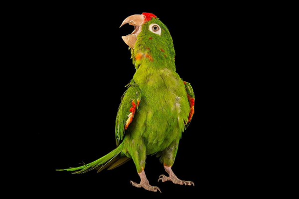
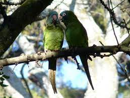

Psittacoidea es una de las tres superfamilias del orden Psittaciformes. Contiene 369 especies de psitacoideos o
loros típicos1. Los loros típicos son más numerosos y están más extendidos que las otras superfamilias de psitaciformes, las
cacatúas y los escasos y confinados loros de Nueva Zelanda, ya que tienen representantes en América, África, Asia y
Oceanía (desde Australia hasta la Polinesia).

Donde viven los loros
Estas aves habitan habitualmente en regiones con clima cálido, lo que significa que podemos hallar loros en cualquier lugar del mundo en
que haya un clima tropical.
Por este motivo, donde hallamos la mayoría de estas aves es en lugares como Asia, Centroamérica, Australia y Sudamérica.
Hay un lugar donde podemos encontrar la mayor cantidad de estas aves en nuestro planeta, y este lugar es el hemisferio sur.
La cotorra austral es un ejemplar de cotorras que habita en la parte sur de América, entre las Islas Malvinas, Argentina y Chile.
-
Loros de lugares secos: la mayor parte de estas aves viven en lugares tropicales húmedos. Sin embargo, encontramos algunas especies, como
las que habitan en zonas africanas y parte de Australia, que viven en lugares un poco secos y con poca vegetación, como el perico
australiano.
-
Loros que habitan en selvas: estas aves se hallan habitualmente en África, el sur de Asia, en Centroamérica y Sudamérica.
-
Loros en las montañas: también podemos encontrar loros en las zonas montañosas. La cotorra verde china, también denominada
cotorra Derby, es una de ellas, la podemos hallar en algunas zonas de la India y en las montañas del Tíbet.